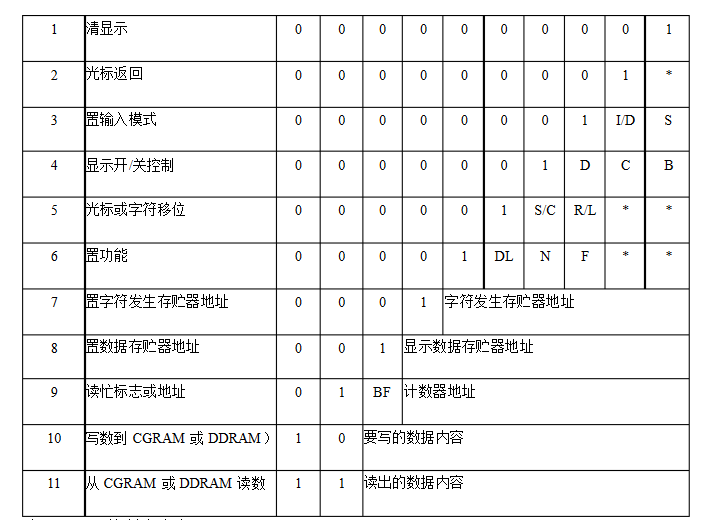

串口通信
write()和print()都用于向串口输出数据，其具体区别有：
- print()输出数据为先将数据转为单个字符，然后转为ASCII码。wirte为直接发送ASCII码。比如print(61)和write(61)，前者会将61先转为对应的字符串'61'，再发送'61'对应的两字节的ASCII码，而后者直接发送ASCII码61，所以在串口监视器中，获得的数据为61和a（因为a的ASCII码为61）
- print()可以设置转换进制方式，比如print(80,HEX)可以在80转为字符串时先转成16进制，最后字符串为'50'。而write()不行
- println()可以后面自动输出一个回车。而没有writeln()
read()和peek()的区别：
- peek()一次读取一个字节，但之后并不会将该字节的数据从缓冲区删除，而read()会
注意串口都是传输字符串的ASCII码。
使用LCD1602输出自定义图案
控制命令表为：

- 指令1：清显示，指令码01H,光标复位到地址00H位置。
- 指令2：光标复位，光标返回到地址00H。符号*指0、1均可。
- 指令3：光标和显示模式设置 I/D：光标移动方向，高电平右移，低电平左移 S:屏幕上所有文字是否左移或者右移。高电平表示有效，低电平则无效。
- 指令4：显示开关控制。 D：控制整体显示的开与关，高电平表示开显示，低电平表示关显示 C：控制光标的开与关，高电平表示有光标，低电平表示无光标 B：控制光标是否闪烁，高电平闪烁，低电平不闪烁。
- 指令5：光标或显示移位 S/C：高电平时移动显示的文字，低电平时移动光标。
- 指令6：功能设置命令 DL：高电平时为4位总线，低电平时为8位总线 N：低电平时为单行显示，高电平时双行显示 F: 低电平时显示5x7的点阵字符，高电平时显示5x10的点阵字符。
- 指令7：字符发生器RAM地址设置。
- 指令8：DDRAM地址设置。
- 指令9：读忙信号和光标地址 BF：为忙标志位，高电平表示忙，此时模块不能接收命令或者数据，如果为低电平表示不忙。